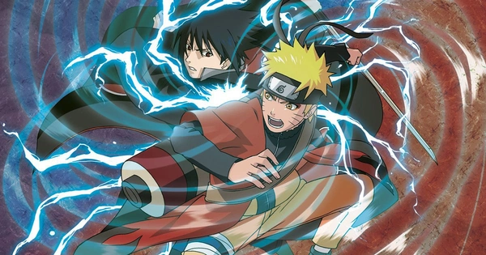

Naruto é uma série de mangá e anime que acompanha a jornada de Naruto Uzumaki, um jovem ninja que sonha em se tornar o hokage, o líder de sua aldeia, a Aldeia da Folha. Naruto é conhecido por um orfão que tem uma raposa de nove caudas selada dentro dele, o que o torna alvo de preconceito e rejeição. Ao longo da história, ele se dedica a se tornar mais forte e a conquistar o respeito dos seus companheiros.
